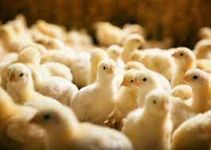
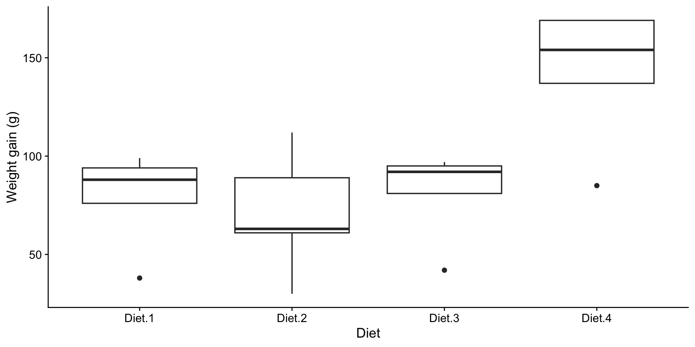
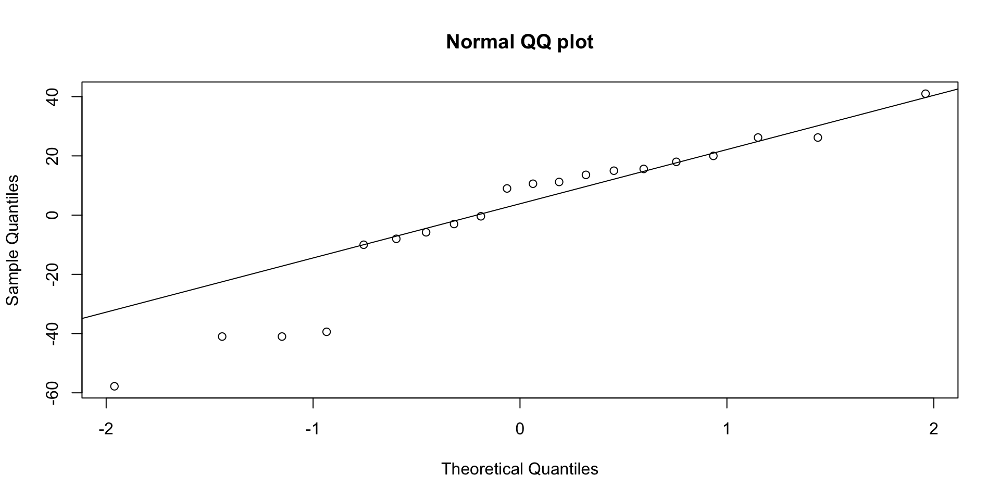
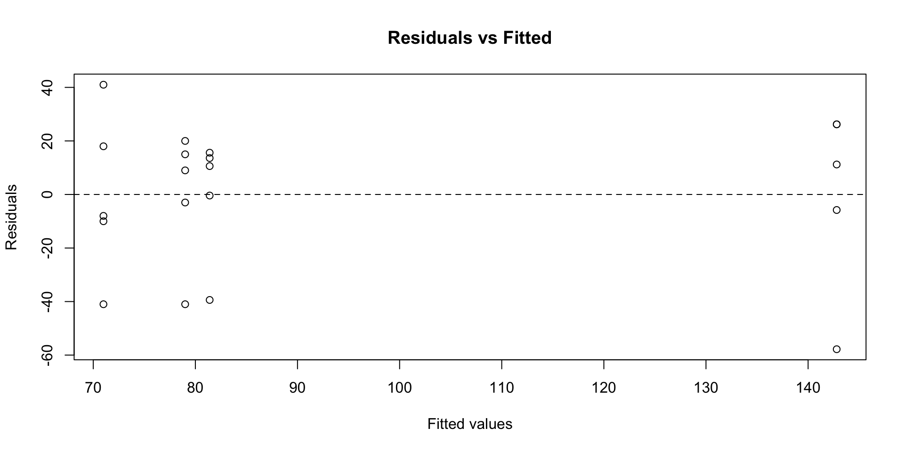
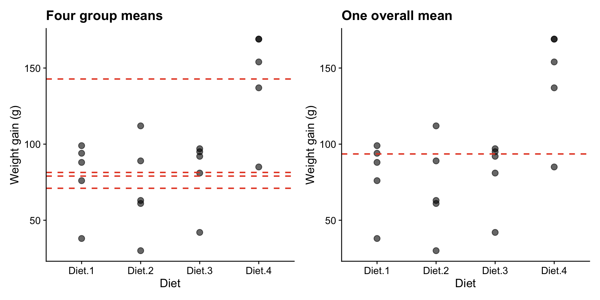
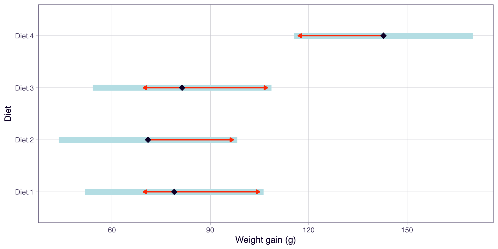

ENVX2001 Applied Statistical Methods
Mar 2026
Before the break we compared two cattle breeds. But what if there were four breeds instead of two?
The problem: every test carries a risk of a Type I error (a false positive).
With 6 groups there are \(\binom{6}{2} = 15\) pairwise comparisons. The probability that none produce a false positive is \(0.95^{15}\), so:
\[P(\text{at least one false positive}) = 1 - 0.95^{15} = 53.7\%\]
| Groups | Pairwise tests | P(at least one false positive) |
|---|---|---|
| 2 | 1 | 5.0% |
| 4 | 6 | 26.5% |
| 6 | 15 | 53.7% |
| 8 | 28 | 76.2% |
| 10 | 45 | 90.1% |

We need a method that handles more than two groups. Consider a new experiment:

What do the boxplots suggest?
| Term | Meaning | In this experiment |
|---|---|---|
| Factor | Categorical variable being tested | Diet |
| Levels | Categories within a factor | Diet 1, Diet 2, Diet 3, Diet 4 |
| Replicates | Observations per level | \(r = 5\) |
This is a one-way ANOVA because there is only one factor. What is ANOVA?
In the \(t\)-test we asked whether two means were equal. ANOVA extends this to any number of groups.
The alternative does not say all means differ. It says at least two do.
Model equation:
\[y_{ij} = \mu_i + \varepsilon_{ij}\]
where \(i = 1, \ldots, t\) treatments and \(j = 1, \ldots, n_i\) replicates. The same structure as the \(t\)-test model, but \(i\) now ranges over more than two groups.
The same three assumptions from the \(t\)-test apply here. We fit the model first, then check.
Normality (Shapiro-Wilk on residuals):
Shapiro-Wilk normality test
data: residuals(model)
W = 0.90961, p-value = 0.06265\(p > 0.05\): no evidence against normality.


R can produce all standard diagnostic plots at once:
We will explore these plots in detail next week. For now, the Shapiro-Wilk and Bartlett’s tests are sufficient.
overall_mean <- mean(chicks$weight)
group_means <- chicks |>
group_by(diet) |>
summarise(mean_wt = mean(weight))
p1 <- ggplot(chicks, aes(diet, weight)) +
geom_point(size = 3, alpha = 0.6) +
geom_hline(data = group_means, aes(yintercept = mean_wt),
linetype = "dashed", colour = "#e64626", linewidth = 0.8) +
labs(title = "Four group means", x = "Diet", y = "Weight gain (g)") +
cowplot::theme_cowplot()
p2 <- ggplot(chicks, aes(diet, weight)) +
geom_point(size = 3, alpha = 0.6) +
geom_hline(yintercept = overall_mean, colour = "#e64626",
linewidth = 0.8, linetype = "dashed") +
labs(title = "One overall mean", x = "Diet", y = "Weight gain (g)") +
cowplot::theme_cowplot()
library(patchwork)
p1 + p2
Do four separate means (left) explain the data better than a single overall mean (right)?
ANOVA splits the total variation in the data into two parts:
ANOVA compares these two quantities. If between-group variation is large relative to within-group variation, we have evidence that the groups genuinely differ.
\[F = \frac{MS_{\text{trt}}}{MS_{\text{res}}}\]
For two groups, ANOVA gives the same answer as the \(t\)-test:
\[F = t^2\]
ANOVA extends the \(t\)-test to any number of groups.
| Source | df | SS | MS | F |
|---|---|---|---|---|
| Treatment | \(t - 1\) | \(SS_{\text{trt}}\) | \(SS_{\text{trt}} / (t-1)\) | \(MS_{\text{trt}} / MS_{\text{res}}\) |
| Residual | \(N - t\) | \(SS_{\text{res}}\) | \(SS_{\text{res}} / (N-t)\) | |
| Total | \(N - 1\) | \(SS_{\text{total}}\) |
Df Sum Sq Mean Sq F value Pr(>F)
diet 3 16467 5489 6.647 0.004 **
Residuals 16 13212 826
---
Signif. codes: 0 '***' 0.001 '**' 0.01 '*' 0.05 '.' 0.1 ' ' 1\[\frac{SS_{\text{treatment}}}{SS_{\text{total}}} = \frac{1.6467\times 10^{4}}{2.9679\times 10^{4}} = 55.5\%\]
The diets explain about 55% of the total variability in chick weight gain.
| Source | df | SS | MS | F | p |
|---|---|---|---|---|---|
| Diet | 3 | 1.6467^{4} | 5489 | 6.65 | 0.004 |
| Residual | 16 | 1.3212^{4} | 825.8 |
There are significant differences in mean weight gain among the four diets (\(F_{3,16} = 6.65\), \(p = 0.004\)).
But ANOVA only tells us that groups differ, not which ones. To identify specific differences, we need post-hoc analysis.
\(H_1\) says “not all means are equal,” but not which ones differ.
Before the break we used a confidence interval for the difference between two cattle breeds. Post-hoc methods apply the same logic to every pair of groups.
The key difference from running separate \(t\)-tests: post-hoc methods widen the CIs to account for multiple comparisons, keeping the overall false positive rate at 5%.
We will cover specific post-hoc methods (Tukey, Bonferroni) in detail next week.
Before the break we used CIs to compare two cattle breeds. The same idea extends to multiple groups. emmeans estimates the mean and standard error for each group from the model.
To find which pairs differ, we construct a CI for the difference between every pair of means.
contrast estimate SE df lower.CL upper.CL
Diet.1 - Diet.2 8.0 18.2 16 -44.0 60.0
Diet.1 - Diet.3 -2.4 18.2 16 -54.4 49.6
Diet.1 - Diet.4 -63.8 18.2 16 -115.8 -11.8
Diet.2 - Diet.3 -10.4 18.2 16 -62.4 41.6
Diet.2 - Diet.4 -71.8 18.2 16 -123.8 -19.8
Diet.3 - Diet.4 -61.4 18.2 16 -113.4 -9.4
Confidence level used: 0.95
Conf-level adjustment: tukey method for comparing a family of 4 estimates lower.CL and upper.CL columns are the 95% CI for the difference
In Lab 03, you will fit your own ANOVA with aov() and explore group comparisons with emmeans. Next week: residual diagnostics and post-hoc methods.
This presentation is based on the SOLES Quarto reveal.js template and is licensed under a Creative Commons Attribution 4.0 International License.